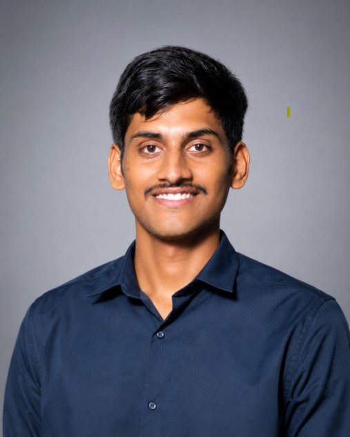

B.Tech AI & Data Science · Graduating May 2026 · Open to Hire
IEEE-published Computer Vision researcher building production-grade ML systems with YOLOv8, Vision Transformers & LLM integrations. 3 deployed projects · 95–98% accuracy · CGPA 8.85 · Vijayawada, India.
Featured Work
Research Spotlight
How do you detect an aircraft in a radar image that has no colour, no texture the way our eyes see it, and is full of noise? In my IEEE-published research I tackled exactly this by replacing colour-based features with GLCM texture analysis — teaching YOLOv8 to see the way SAR sensors see.
Read the Full Breakdown →